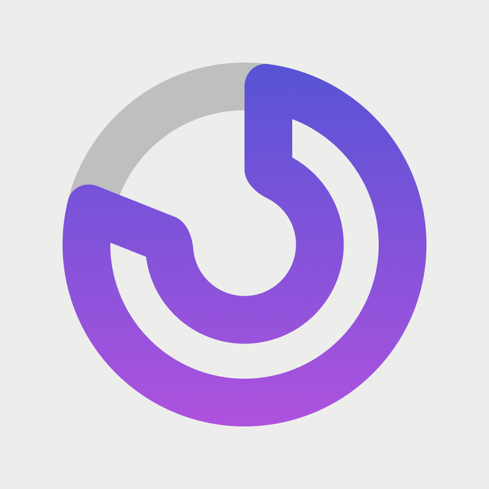

Hello World!
Mobile Software Architect/Developer
Projects


Experience
Oct 2022–Present — iOS Lead Developer, Aviv
Full-time · Hamburg, Germany
Leading and architecting mobile iOS projects; technical ownership of apps, code reviews and mentoring.
Apr 2016–Oct 2022 — Software Engineer, Mobile Applications, Immowelt/Immonet
Maintenance, refactoring and continuous development of innovative iOS apps for iPhone and iPad. Worked on feature releases, performance optimization and crash analysis.
Feb 2015–Mar 2016 — iOS Developer, Empora Group GmbH
Developed the Fashionfreax app: concept, implementation and release for iPhone/iPad. Implemented UI, networking and app integration.
2013–2014 — Master's degree, Multimedia Engineering, Hochschule Wismar
Focus: microprocessor technology, image processing and software development.
2009–2013 — Bachelor's degree, Multimedia Engineering, Hochschule Wismar
Degree in Multimedia Engineering.